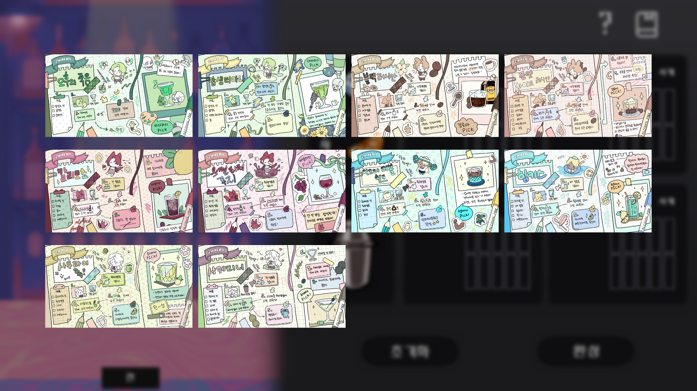
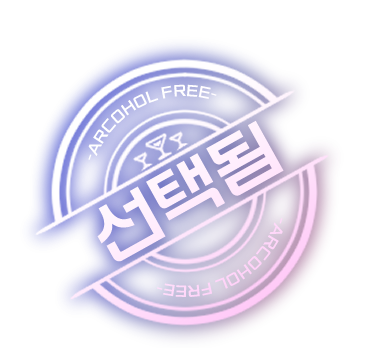
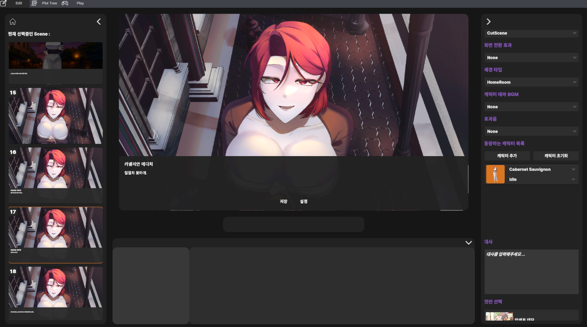
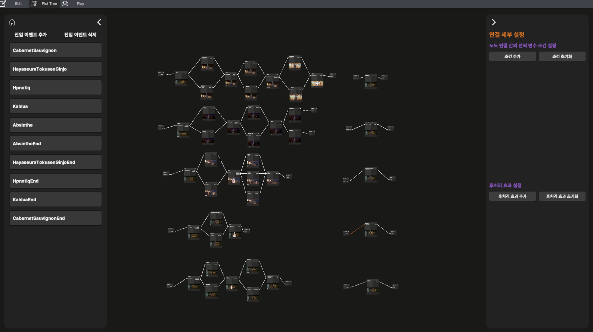
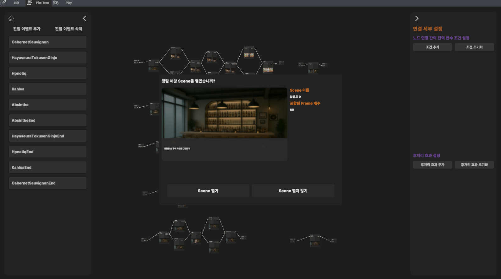
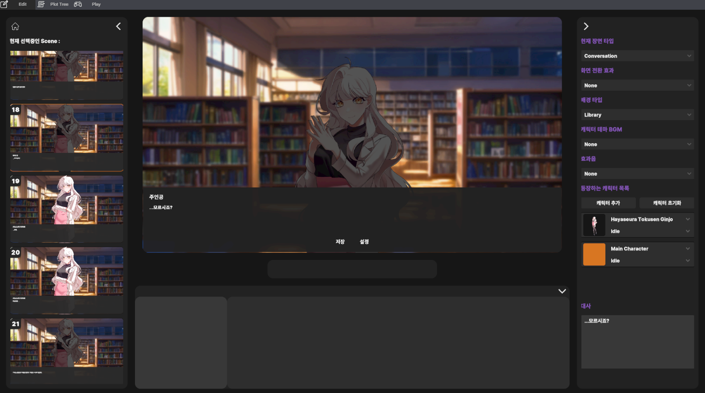

카넬리안 메디치 #고급스러움 #지적임 #우아함 #내성적 #슬픔 #섹시함 #연상 "와인은 시간이 흐를수록 깊이가 생기죠." 우아하고 신비로운 연상의 캐릭터
마타 하리 #몽환적 #위험 #집착 #매혹적 #신비로움 #환각 #거리감 "예술은 우리를 현실에서 탈출시키지." 몽환적이고 위험한 매력의 캐릭터
타치바나 헬레나 #와향적 #까칠 #츤츤 #기분파 #질투 #외로움 #반전매력 "사장님, 나쁘지 않은 사람인걸?" 질투심 많고 존재의 증명을 받고 싶은, 외로움을 숨긴 갸루 스타일의 캐릭터
.
.
.
콘텐츠 소개
.
.
.

칵테일 주조 미니게임
〈ALCOHOL FREE〉의 미니게임은 단순한 보너스 요소가 아니라, 게임의 몰입을 더하는 핵심적인 즐길 거리입니다. 플레이어는 각 캐릭터가 상징하는 술을 중심으로 전용 레시피를 직접 완성해야 하며, 재료의 순서와 비율, 그리고 마무리까지 모든 과정에 세심한 손길이 필요합니다. 작은 차이 하나가 완전히 다른 결과를 만들어내기 때문에 긴장감과 성취감을 동시에 느낄 수 있습니다.
게임은 레시피 북에서 원하는 메뉴를 선택하는 것부터 시작합니다. 인벤토리에서 술과 재료, 가니쉬, 얼음을 꺼내고, 셰이킹 컵으로 흔들어 섞은 뒤 글라스에 따르는 과정을 거쳐 칵테일을 완성합니다. 재료와 순서를 정확히 지키고 비율을 맞추면 최고 등급인 5성 칵테일이 완성되며, 일부만 어긋나면 2~4성으로 평가됩니다. 만약 순서나 비율을 크게 벗어나면 1성을 기록하게 됩니다.
데모 버전에서는 각 캐릭터마다 두 가지 전용 레시피가 준비되어 있어 총 10개의 칵테일을 만들 수 있으며 〈ALCOHOL FREE〉의 칵테일 미니게임은 단순한 반복이 아니라 캐릭터와의 유대와 서사를 확장시키는 장치입니다. 당신의 정성과 선택이 담긴 한 잔이 그녀들의 마음을 움직이고, 또 다른 이야기를 열어 줄 것입니다.

캐릭터별 앨범
〈ALCOHOL FREE〉의 앨범은 단순한 기록이 아닌, 캐릭터와 함께한 추억을 간직하는 특별한 공간입니다. 플레이어는 각 캐릭터별 앨범을 통해 공략 과정에서 열리는 이벤트와 컷씬, 캐릭터 전용 배경 일러스트, 캐릭터가 직접 남긴 듯한 자필 사인, 그리고 그녀만의 메인 테마곡을 감상할 수 있습니다. 게임을 진행하며 해금된 모든 순간들이 앨범에 차곡차곡 기록됩니다.
.
.
.
에디터 소개




〈ALCOHOL FREE EDITOR〉는 비주얼 노벨 제작을 위한 전용 에디터입니다. 시인성, 확장성, 증응성을 핵심 가치로 삼아, 누구나 직관적이고 유연하게 사용할 수 있도록 설계되었습니다.
주요 기능
Plot Tree 시스템 씬 구조를 직관적으로 생성·수정·삭제 가능 씬 진입 이벤트 생성 및 관리 지원 씬 연결 노드에 세부 설정을 추가해 복잡한 흐름도 손쉽게 구현 씬 편집 기능 배경, 효과, 대사 등 연출 요소 설정 가능 캐릭터 배치 및 대사 작성으로 완성도 높은 스토리 구현
.
.
.
제작
총괄 : EAND 프로그래머 : HyunsuYu 기획 : 심심니즘 시나리오 : 블랙카우 게임 그래픽 : 924, EAND, Simsaram, 곰손토끼 UI 그래픽 : 924
만약 저희 게임에 관한 질문이나 문의가 있으시다면 antz051029@gmail.com 으로 연락 부탁드립니다.